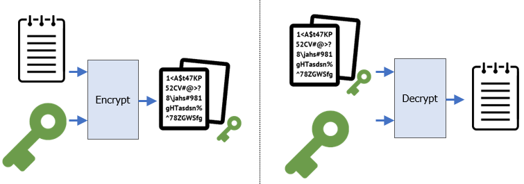
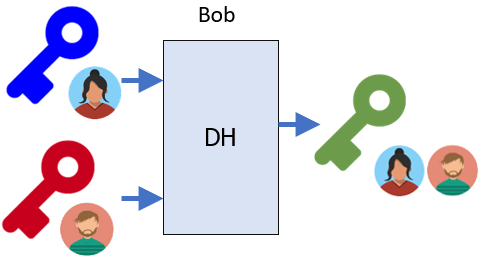
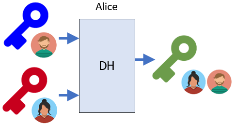
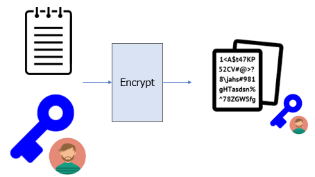
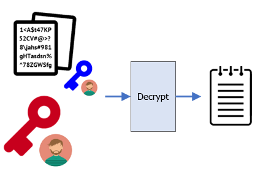
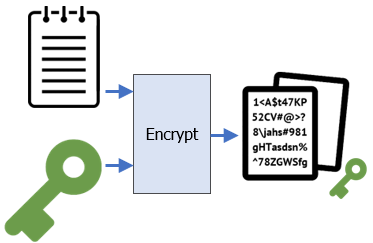
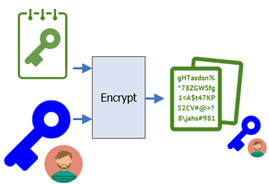
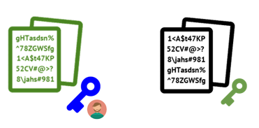
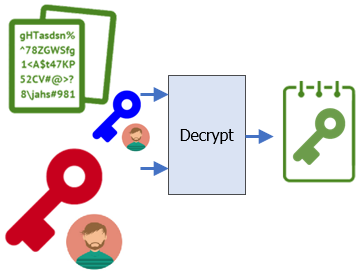
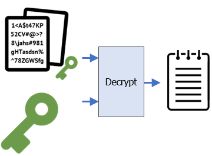

Symmetric encryption schemes are typically used to encrypt large amounts of data using the same key to both encrypt and decrypt shown in the figure below:

To begin with, on the KaliVM, generate a random 32-byte symmetric key and store it in sk.bin
openssl rand 32 > sk.bin
AES ECB mode
One symmetric encryption algorithm that can be used is AES-256. There are several modes it supports with varying properties. One mode that is not recommended is ECB (electronic code book) mode. With this mode, blocks of plaintext that are identical in a file have the exact same ciphertext. Using the symmetric key generated, we will first encrypt a string of 64 "A" characters and examine the resulting ciphertext.
python3 -c 'print(64*"A")' | openssl enc -aes-256-ecb -pass file:sk.bin - | xxd
Examine the output and see the repeated pattern that appears in the ciphertext. Answer the following questions:
- What is the repeated pattern of bytes in the ciphertext?
- Given this, how large is the blocksize in bits?
AES CBC mode
AES also supports a cipher-block chaining mode (CBC) in which the ciphertext output of the previous block is used as input in the subsequent block's encryption. This eliminates the behavior seen previously. Repeat the operation using CBC mode.
python3 -c 'print(64*"A")' | openssl enc -aes-256-cbc -pass file:sk.bin - | xxd
Symmetric encryption and decryption are typically done on files. Use the following command to create the file of 64 "A"s as file.txt.
python3 -c 'print(64*"A")' > file.txt
Then, encrypt it with AES-256-CBC using sk.bin to create file_sk.bin (using the _ to denote the key used to encrypt the file) and examine the encrypted file with xxd.
openssl enc -aes-256-cbc -in file.txt -out file_sk.bin -pass file:sk.bin xxd file_sk.bin
Repeat the encryption again and compare its output with the previous one.
- Explain why the results of the encryption are different.
Decrypt the file using sk.bin to recover the original file. Verify proper decryption by performing a diff.
openssl enc -d -aes-256-cbc -in file_sk.bin -out decrypt.txt -pass file:sk.bin diff file.txt decrypt.txt
Finally, cleanup.
rm sk.bin file.txt file_sk.bin decrypt.txt
Issue
If two parties (Alice and Bob), want to encrypt and decrypt messages between themselves using a symmetric key (e.g. sk.bin), how can they securely distribute the key?
Symmetric encryption has a key distribution problem in which two parties wishing to exchange encrypted data must first agree upon a symmetric key that must be kept secret. Asymmetric encryption schemes attempt to address this by creating a key pair in which one key is public and one is private, then using them to generate a secret symmetric key that no one else can obtain. One such algorithm for doing so is the Diffie-Hellman key exchange: an algorithm that is not so much of an exchange as a mutual generation of a shared secret key.
To begin with, create two subdirectories in your home directory, one each for Alice and Bob. Any file we generate in these subdirectories will be private while any data we place in the home directory will be considered public.
cd; mkdir Bob Alice
Global key setup
The algorithm uses a set of global public parameters to operate. We first generate and publish these parameters for everyone to see using the privacy-enhanced mail format (~/PubDHParams.pem).
openssl genpkey -genparam -algorithm DH -out ~/PubDHParams.pem
Using the commands below, examine the PEM file directly to show the parameters encoded in Base64. Then use openssl to decode the parameters and examine the output.
cat ~/PubDHParams.pem openssl pkeyparam -in ~/PubDHParams.pem -text -noout
Key setup for Bob
Based on these global parameters, both Bob and Alice can generate their own private and public key pairs that can be used to perform the Diffie-Hellman algorithm. First, we generate Bob's keypair and examine it.
cd ~/Bob openssl genpkey -paramfile ~/PubDHParams.pem -out BobPrivDHKey.pem openssl pkey -in BobPrivDHKey.pem -text -noout
We then publish the public key part of it.
openssl pkey -in BobPrivDHKey.pem -pubout -out ~/BobPubDHKey.pem openssl pkey -pubin -in ~/BobPubDHKey.pem -text -noout
Key setup for Alice
Next, we generate a keypair for Alice and publish its public key.
cd ~/Alice openssl genpkey -paramfile ~/PubDHParams.pem -out AlicePrivDHKey.pem openssl pkey -in AlicePrivDHKey.pem -pubout -out ~/AlicePubDHKey.pem
Secret key generation
At this point, everyone can see the public keys for Alice and Bob as pictured below.

The Diffie-Hellman algorithm allows Bob to take Alice's public key (~/AlicePubDHKey.pem) and his own private key (BobPrivDHKey.pem) to generate another key (Bob_sk.bin) that combines the two.

cd ~/Bob openssl pkeyutl -derive -inkey BobPrivDHKey.pem -peerkey ~/AlicePubDHKey.pem -out sk.bin
Similarly, the algorithm also allows Alice to take Bob's public key and her own private key to generate the exact same key.

cd ~/Alice openssl pkeyutl -derive -inkey AlicePrivDHKey.pem -peerkey ~/BobPubDHKey.pem -out sk.bin
Using xxd, examine the keys Bob and Alice have generated via Diffie-Hellman.
xxd ~/Bob/sk.bin xxd ~/Alice/sk.bin cmp ~/Bob/sk.bin ~/Alice/sk.bin
- Take a screenshot showing the xxd output for each.
With this approach, Bob and Alice can now use this key as a shared symmetric key, effectively solving the problem of key distribution.
Cleanup before going to the next step.
rm ~/PubDHParams.pem ~/BobPubDHKey.pem ~/AlicePubDHKey.pem ~/Alice/sk.bin ~/Bob/sk.bin ~/Alice/AlicePrivDHKey.pem ~/Bob/BobPrivDHKey.pem
Asymmetric encryption keys can obviate the need to generate a shared symmetric key altogether. In this exercise, we will use RSA to have Alice send a secret message to Bob directly, relying only on Bob's public key.
Key setup for Alice and Bob
Using the command below, we'll then generate a key pair for Bob using RSA and store it in BobPrivKey.pem.
cd Bob openssl genpkey -algorithm rsa -out BobPrivKey.pem
Using the commands below, examine the PEM file directly to show the private key encoded in Base64. Then use openssl to decode the key and examine the output.
cat BobPrivKey.pem openssl pkey -in BobPrivKey.pem -text -noout
- Take a screenshot of the two prime numbers used to generate the modulus (the private key)
Using the command below, emit the public key into the home directory (~/BobPubKey.pem).
openssl pkey -in BobPrivKey.pem -pubout -out ~/BobPubKey.pem
Examine the public key and see that it contains only the modulus:
cat ~/BobPubKey.pem openssl pkey -in ~/BobPubKey.pem -pubin -text -noout
- Take a screenshot of the modulus (the public key). How many bits is it?
Repeat the process to generate a keypair for Alice.
cd ~/Alice openssl genpkey -algorithm rsa -out AlicePrivKey.pem openssl pkey -in AlicePrivKey.pem -pubout -out ~/AlicePubKey.pem
Encryption

As Bob has published his public key, Alice now wants to encrypt a message to him using this key that only he can decrypt with the corresponding private key. Begin by having Alice create a file, consisting of 512 "A" characters. Then, using Bob's public key, attempt to encrypt the file.
cd ~/Alice python3 -c 'print(512*"A")' > file.txt openssl pkeyutl -encrypt -in file.txt -pubin -inkey ~/BobPubKey.pem -out ~/file_BobPubKey.bin
- Given the size of the public key, explain the results of this encryption attempt.
Repeat the encryption using 64 "A" characters, publishing the encrypted file at ../file_BobPubKey.bin. Examine its output.
python3 -c 'print(64*"A")' > file.txt openssl pkeyutl -encrypt -in file.txt -pubin -inkey ~/BobPubKey.pem -out ~/file_BobPubKey.bin xxd ~/file_BobPubKey.bin
Decryption
Although anyone can view the encrypted file, only Bob can decrypt it with his private key:

Change into Bob's directory and have Bob use his private key to decrypt the message. Examine the decrypted file to ensure the original file has been recovered.
cd ~/Bob openssl pkeyutl -decrypt -in ~/file_BobPubKey.bin -inkey BobPrivKey.pem -out decrypt.txt diff decrypt.txt ~/Alice/file.txt
Finally, cleanup.
rm ~/Bob/decrypt.txt ~/file_BobPubKey.bin ~/Alice/file.txt
Issue
How can we send large amounts of data using asymmetric encryption?
Asymmetric encryption makes key distribution easier, but can only send small amounts of data at a time, based on the key size being used. Symmetric encryption has a key distribution problem, but is able to send large amounts of data. Many cryptographic protocols combine the two mechanisms in order to send large amounts of data easily.
Alice
Alice is attempting to send a large file without worrying about distributing a symmetric key. As before, she generates the large file (file.txt), a symmetric key (sk.bin), and then encrypts the file with the symmetric key (~/file_sk.bin) using AES in CBC mode. At this point, even though everyone can see the file, no one is able to decrypt it except Alice.

cd ~/Alice python3 -c 'print(512*"A")' > file.txt openssl rand 32 > sk.bin openssl enc -aes-256-cbc -in file.txt -out ~/file_sk.bin -pass file:sk.bin
Alice then takes the symmetric key and encrypts it with Bob's public key, generating the encrypted symmetric key (~/sk_BobPubKey.bin).

openssl pkeyutl -encrypt -in sk.bin -pubin -inkey ~/BobPubKey.pem -out ~/sk_BobPubKey.bin
Bob
At this point, Bob is the only other person besides Alice who can decrypt the symmetric key and the original file.

To begin with, Bob takes the encrypted symmetric key (~/sk_BobPubKey.bin) and uses his private key (BobPrivKey.pem) to decrypt the symmetric key (sk.bin).

cd ~/Bob openssl pkeyutl -decrypt -in ~/sk_BobPubKey.bin -inkey BobPrivKey.pem -out sk.bin
Now, using the decrypted symmetric key, Bob can now decrypt the encrypted file (~/file_sk.bin) as before.

openssl enc -d -aes-256-cbc -in ~/file_sk.bin -out decrypt.txt -pass file:sk.bin diff decrypt.txt ~/Alice/file.txt
Once you've verified this, clean up.
rm decrypt.txt sk.bin ~/file_sk.bin ~/sk_BobPubKey.bin ~/Alice/file.txt ~/Alice/sk.bin
Issue
How does Bob know Alice sent this file? Unfortunately, he does not.